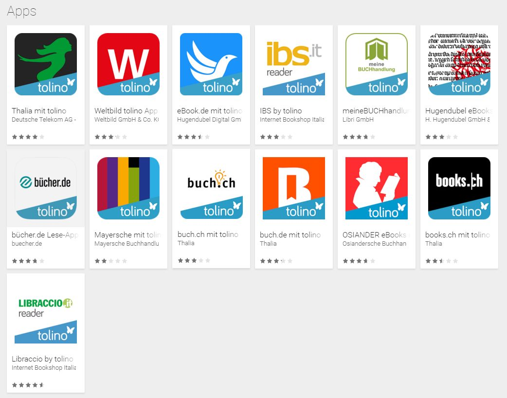

메타, 청소년 중독 소송 180억 달러 합의… 미성년 하루 이용 2시간 제한
메타가 청소년의 소셜미디어 중독 책임을 다투는 소송에서 180억 달러 규모의 합의에 이르렀다. 미국 내 미성년 이용자의 하루 이용 시간을 2시간으로 제한하는 조치가 포함됐다.
진태흥 기자 · 2026.08.28
橋국제

메타가 미성년자의 소셜미디어 중독 피해를 다투는 미국 내 소송에서 180억 달러(약 5,700억 대만달러) 규모의 합의에 도달했다. 합의안에는 금전 배상과 함께 제품 설계 변경 의무가 담겼다.
광고 문의 · 300×250핵심 조항은 미국 내 미성년 이용자의 페이스북·인스타그램 하루 이용 시간을 2시간으로 제한하는 것이다. 이 밖에 심야 시간대 알림 차단, 무한 스크롤 기능의 청소년 계정 기본 해제, 연령 확인 절차 강화 등이 포함된 것으로 알려졌다.
소송은 미국의 여러 주 정부와 학교구, 개별 이용자 가족이 제기한 사건들이 병합된 형태로 진행돼 왔다. 원고 측은 플랫폼이 이용 시간을 늘리도록 의도적으로 설계됐고, 그 결과 청소년의 우울과 수면 부족, 학업 부진이 악화됐다고 주장했다.
메타는 그동안 인과관계를 입증하는 연구가 충분하지 않다는 입장을 유지해 왔다. 합의는 통상 책임 인정을 뜻하지 않으며, 이번에도 같은 조건이 붙은 것으로 전해진다.
이번 조치가 미국 밖에서도 적용될지는 정해지지 않았다. 다만 유럽연합과 여러 아시아 국가가 미성년자 보호 규정을 강화하는 흐름이어서, 사실상 국제 기준으로 확산될 가능성이 거론된다.
한국과 대만에서도 청소년 스마트폰 이용 시간 제한 논의가 이어져 왔다. 제도적 규제와 가정 내 조정 가운데 어느 쪽에 무게를 둘지를 두고 견해가 갈린다.
합의안은 법원의 승인 절차를 거쳐야 효력이 생긴다.
출처·참고 (사실 확인용 — 본문은 직접 재작성)
· 自由時報 2026-08-27 — https://news.ltn.com.tw/news/world/breakingnews/5100002
· 聯合新聞網 2026-08-27 — https://udn.com/news/story/6813/8888889
· 自由時報 2026-08-27 — https://news.ltn.com.tw/news/world/breakingnews/5100002
· 聯合新聞網 2026-08-27 — https://udn.com/news/story/6813/8888889